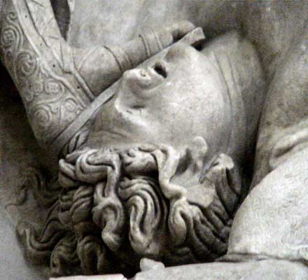

(...) Κι' οι άλλοι κάθουντ' ήσυχοι στις θέσεις τους και μένουν.
μόνος ακόμα ο φαφλατάς Θερσίτης θορυβούσε,
πούξερε πάντα ένα σωρό παλάβρες ν' αραδιάζει,
και με τους πρώτους τάβαζε, τρελά με δίχως τάξη,
ότι θα κάνει νόμιζε τους άλλους να γελάσουν.
Άλλο πιο μισερό κορμί δεν ήρθε πέρα απ' τ' Άργος.
Είταν αλλίθωρος, κουτσός απ' τόνα πόδι, μ' ώμους
γυρτούς που μέσα πέφτανε στα στήθια, με χουνήσο
κεφάλι, μόλις λιγοστές πασπαλισμένο τρίχες.
Αφτόνε πια τον μάχουνταν απ' όλους ο Δυσσέας
κι' ο Αχιλιάς· γιατί μ' αφτούς φιλονεικούσε πάντα.
Και τότες πάλι με λαλιά στριγκίσα βλαστημούσε
τον Αγαμέμνο· κι' άκουγαν τα λόγια μ' αναγούλα
οι Δαναοί, και θύμωναν στα βάθια της καρδιάς τους.
Μα αφτός με βροντερές φωνές δεν έπαβε να σκούζει
« Τ' Ατρέα γιε, τί φταίξαμε και πάλι ; τί σου λείπει ;
Γιομάτο το καλύβι σου μαθές χαλκό, γυναίκες
έχεις πολλές και διαλεχτές, που πρώτα πρώτα εσένα
σ' τις δίνουμε άμα μπούμε εμείς σε κάνα πλούσιο κάστρο.
Ή το χρυσάφι ακόμα θες που τύχει να μας φέρει
και κάνας Τρώας προεστός για ξαγορά του γιου του,
που εγώ δεμένονε ή κανείς εδώ τον έφερε άλλος,
ή καμιά κόρη πούφερε ναν την κρατήσει χώρια
και μόνος ναν τη χαίρεται και ναν την αγκαλιάζει;
Είσαι αρχηγός μας κι' άπρεπο να μας ποτίζεις πίκρες.
Ά κολοκύθες, σίχαμα του κόσμου, Αργιτοπούλες,
όχι πια Αργίτες, πάρτε βρε τα πλοία να τραβάμε,
κι' ας μένει αφτός το βιός του εδώ κι' ας το ζεσταίνει μόνος,
κι' έτσι θα μάθει κι' αν εμείς φελάμε ή δε φελάμε.
Πού τώρα ακόμα πρόσβαλε τον Αχιλιά, έναν άντρα
πιο δυνατό του και πολύ· τι το πρεσβιό του πήγε
και τ' άρπαξε με το στανιό. Μα αλήθια αφτός δεν έχει
λίγη, Αγαμέμνο, μέσα του χολή, μον παραβλέπει·
αλλιώς, αφτή σου η αρπαγή θενάταν κι' η στερνή σου. »
Όμως εκεί τον αρχηγό που τον κακολογούσε,
να κι' ο Δυσσέας στη στιγμή προφταίνει και του ρήχνει
μιά άγρια ματιά, και με θυμό τού σταματάει τη γλώσσα
« Θερσίτη παλαβόστομε, που ξέρεις να φωνάζεις,
στάσου, και μόνος μη ζητάς μ' εμάς να λογοφέρνεις !
Γιατί από σένα λέω εγώ κορμί πιο σιχαμένο
εδώ κανένα με τους γιους δεν άραξε τ' Ατρέα,
και δε σου πάει τους αρχηγούς νάχεις εσύ στο στόμα,
κι' όλο για κείνους μ' άτσαλα να ρητορέβεις λόγια,
και στα πανιά να στέκεσαι μη βρεις καιρό να φύγεις.
Πώς θάβγει ακόμα αφτή η δουλιά κανείς δεν καλοξέρει,
αν για καλό μας ή κακό θ' αφίναμε την Τροία.
Μόν ένα λόγο θα σου πω που θα τον δεις να γίνει.
Έτσι αν σε τύχω άλλη φορά σαν τώρα να σαλιάζεις,
δε θέλω το κεφάλι μου στους ώμους πια να στέκει,
ή πίσω ζωντανό να βρω στο σπίτι το παιδί μου,
αν δε δε πιάσω κι' όλα σου τα ρούχα αν δεν σ'τα βγάλω —
την κάπα, το πουκάμισο, κι' όσα φοράς στη φύση —
και μ' άσκημο απ' τη συντυχιά στυλιάρι αν δε σε διώξω,
που έτσι κλαμένος και γυμνός να τρέχεις στα καράβια. »
Έτσι είπε, και με το ραβδί την πλάτη και τους ώμους
του κοπανάει γερά, κι' αφτός τη ράχη καμπουριάζει
και δάκρυ χύνει φλογερό. Και πρήξιμο στην πλάτη
αίμα γιομάτο ανέβηκε απ' του ραβδιού το χτύπο.
Και ζαρωμένος κάθησε, και νιώθοντας τον πόνο
τούρηξε μίσους μιά ματιά και σφούγγισε το δάκρυ.
Κι όλος εγέλασ’ ο λαός αν κι ήταν πικραμένος.
Όμηρος, Ιλιάδα Β' 211-269
|